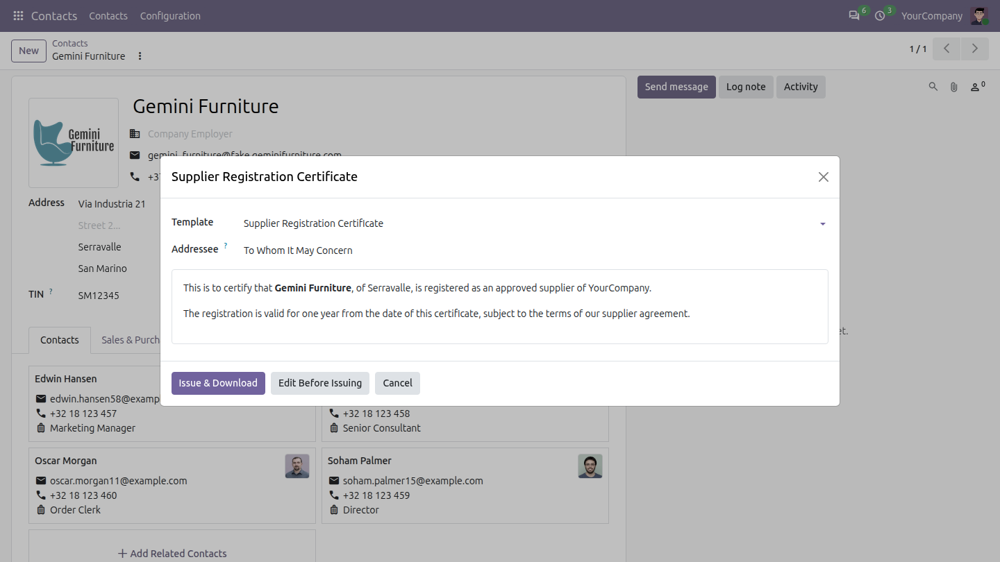
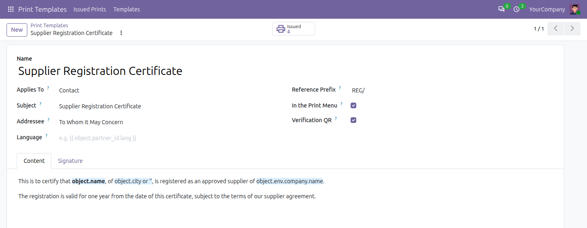
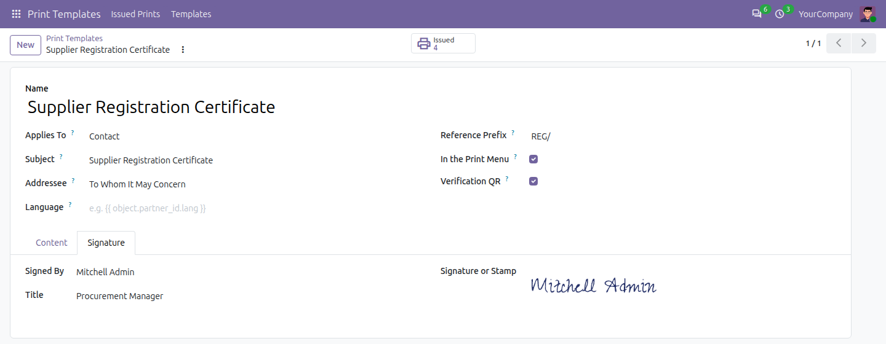
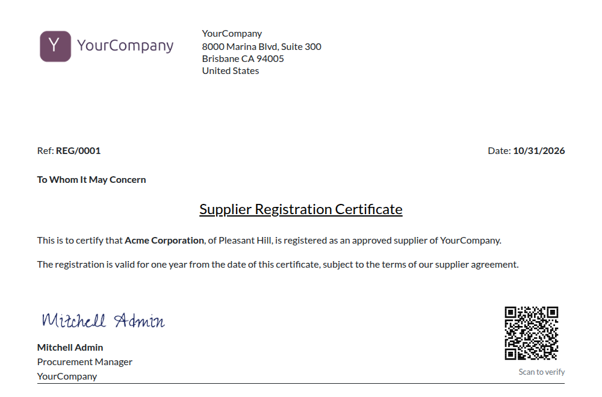
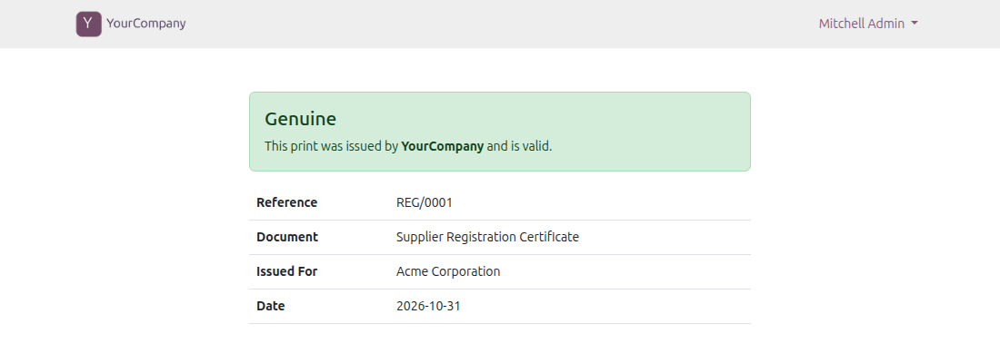
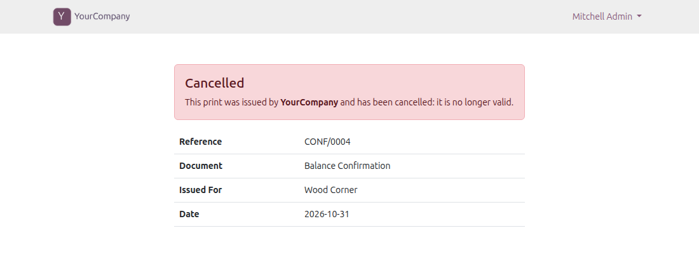

100% Free
Open source · LGPL-3
Odoo 20 Community & Enterprise
Print Templates
Certificates, letters and confirmations for any app. Write the template in the editor with the fields of the record, then print it from the Print menu of the record: every print is numbered, kept as issued, and can carry a QR code that proves it is genuine.
Any kind of recordWritten in the editorIn the Print menuSeveral records at onceNumbered printsFrozen textSignature or stampVerification QR code

Print, then the template: a preview of the text, Issue & Download or Edit Before Issuing.
Any record
employees, contacts, orders
0 code
no report to develop
1 QR code
to verify a print
100% free
open source, LGPL-3
Completely free. Your feedback makes it better.
No paid edition, no limits: the code is open (LGPL-3). Every feature is covered by automated tests. Tell us what works, what does not and what you miss.
How it worksWrite, print, verify
From the text of a certificate to a numbered PDF, in three steps.
1
Write the template
Choose the kind of record it applies to and write the text in the editor: type {{ to insert a field of the record. Add the signatory and a signature or stamp.2
Print it from the record
The template is in the Print menu of its records, next to the reports of Odoo. One record or several at once, with a preview.3
Kept and verifiable
Each print gets a reference such as CERT/2026/0001 and is kept with its PDF. Its QR code opens a page that says whether it is genuine.
Use it everywhereOne app for every letter you print
A template applies to any kind of record: the apps of Odoo, the apps of others and your own.
👥
Employees
› Salary and experience certificates
› No objection certificates
› Employment confirmations
🤝
Customers and vendors
› Balance confirmations
› Supplier registration
› Letters of authorization
⚙️
Any other record
› Orders, projects, assets
› Your own modules
› No code to add
TemplatesWritten in the editor
The text of the template is written in the HTML editor of Odoo: type {{ to insert a field of the record. The subject, the addressee and the language can use fields too. The Signature tab names the signatory, their title and a signature or stamp image, printed on the company letterhead of the document layout.

The text, with the fields of the record

The signatory and their signature or stamp
PrintingIn the Print menu of the record
Each template appears in the Print menu of its records without any development; untick In the Print Menu to hide it. Print one record or several at once. Issue & Download prints at once; Edit Before Issuing opens a draft, e.g. to add a line for an embassy.
The printNumbered, signed, on your letterhead
Every print gets a reference from the sequence of its template and is kept as an issued print with its PDF. The text is frozen when the print is issued: printing it again gives the same PDF, whatever changed on the record since.

The reference, the date, the text with the fields of the record, the signatory and the QR code.
Issued printsEvery print kept as issued
Print Templates, Issued Prints lists every print: its reference, its template, who it was printed for and who issued it. Download it again as it was, or cancel it. Users see the prints they made; the print administrators see and cancel all of them.
VerificationGenuine? Scan the QR code
Optionally, the print carries a QR code. It opens a public page stating whether the print is genuine and still valid, without showing its text. A cancelled print shows as cancelled there.

A genuine print, still valid

A cancelled print, no longer valid
FeaturesEverything a printed letter needs
From the first template to the proof it is real.
📝
A template per kind of record
Employee, Contact, or any model; the text in the HTML editor with {{ to insert the fields.🖨️
In the Print menu
Next to the reports of Odoo, without any development. Untick In the Print Menu to hide it.📄
Several records at once
Print one record or many, with a preview of the text.🔢
Numbered prints
A reference from the sequence of the template, e.g. CERT/2026/0001, kept with its PDF.❄️
Frozen text
Printing it again gives the same PDF, whatever changed on the record since.✎️
Edit before issuing
A draft to adjust the text of one print before it is issued.✅
Verification QR code
A public page says whether the print is genuine, still valid or cancelled, without its text.👤
Signatory and stamp
Their name, their title and a signature or stamp image, on the company letterhead.
WhyFrom a Word file to a numbered print
What changes the day Print Templates is installed.
| Without Print Templates | With Print Templates |
|---|
| Writing a certificate | ✗ Copy a Word file, retype the details | ✓ Printed from the record, its fields filled in |
| Keeping track | ✗ A folder of PDF files, if any | ✓ Every print numbered and kept with its PDF |
| Changes later | ✗ Which version was sent? | ✓ The text is frozen when issued |
| Is it genuine? | ✗ A phone call to check | ✓ A QR code and a public page |
With the other Odoo Mates appsSigned or filed, by a bridge
With Sign, the bridge Sign: Print Templates installs by itself: the issued prints are sent for electronic signature. With Document Expiry, Print Templates: Documents installs by itself: a template files each print as a document of the record, expiring after a number of days. Print Templates works without them.
How to use it
1. Give the Administrator access of Print Templates to the people who write the templates and cancel prints.
2. Print Templates, Templates: the kind of record (Applies To), the reference prefix, the text, the signature, and whether it carries the verification QR code.
3. Open a record, use Print, and choose the template: Issue & Download prints it at once, Edit Before Issuing opens a draft to adjust first.
4. Print Templates, Issued Prints lists every print, to download it again or cancel it.
Good to know
✓ Depends only on Discuss (mail) and Web: it installs by itself, without any other Odoo Mates app.
✓ The QR code needs the base URL of the database to be the address your readers reach.
✓ Works with Odoo 20 Community and Enterprise.

Keeping it simple